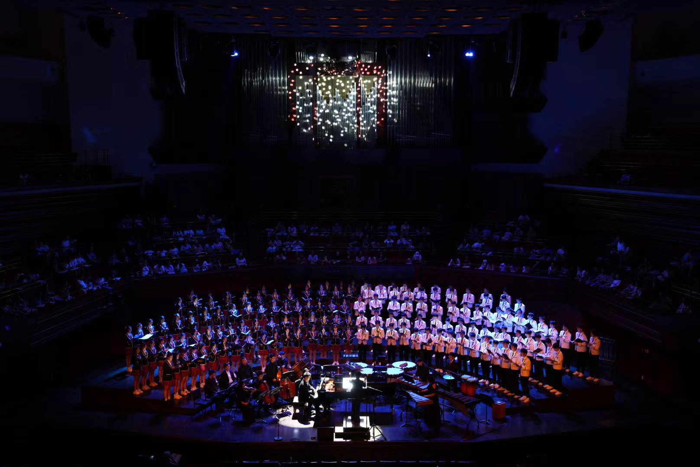
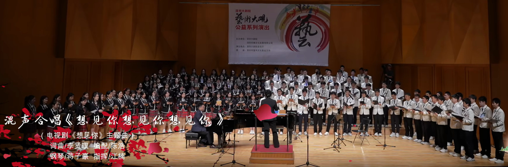
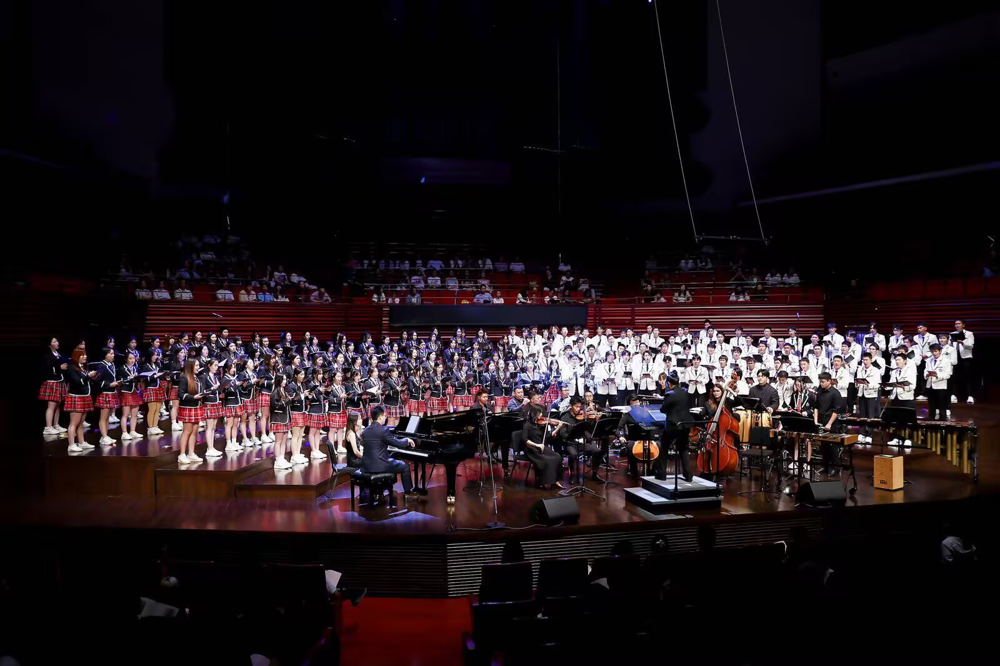
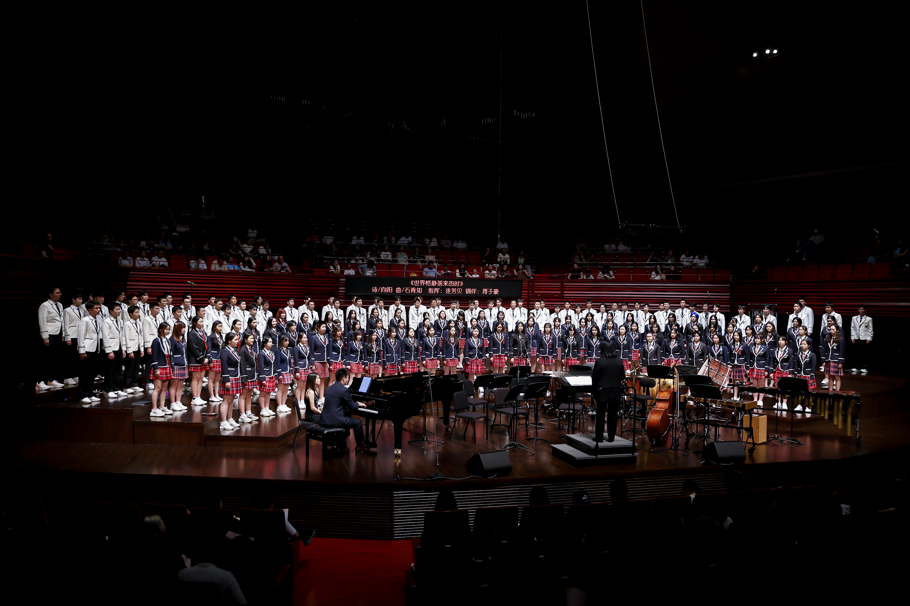
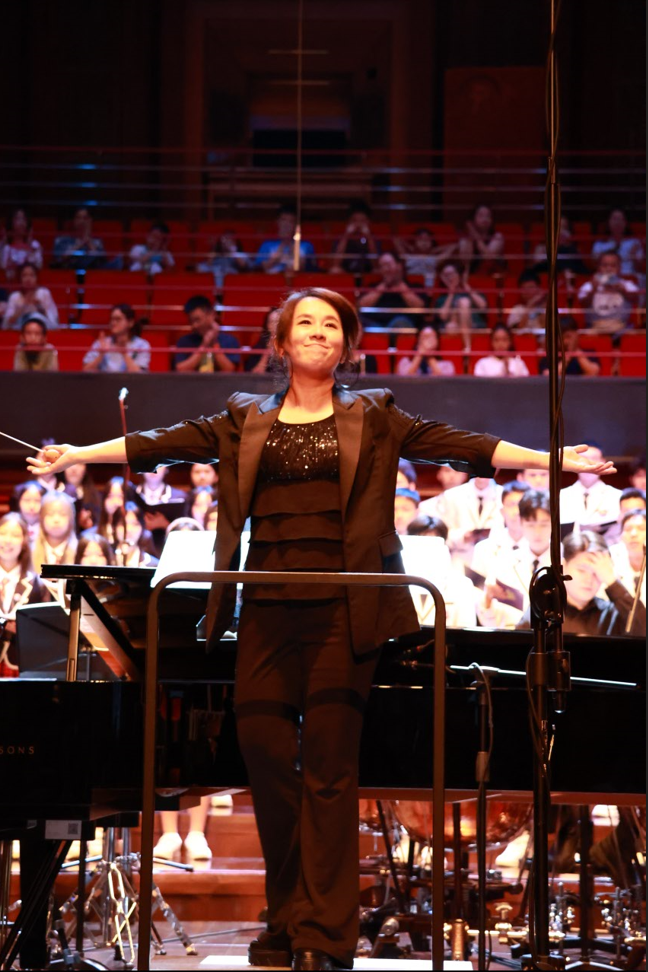
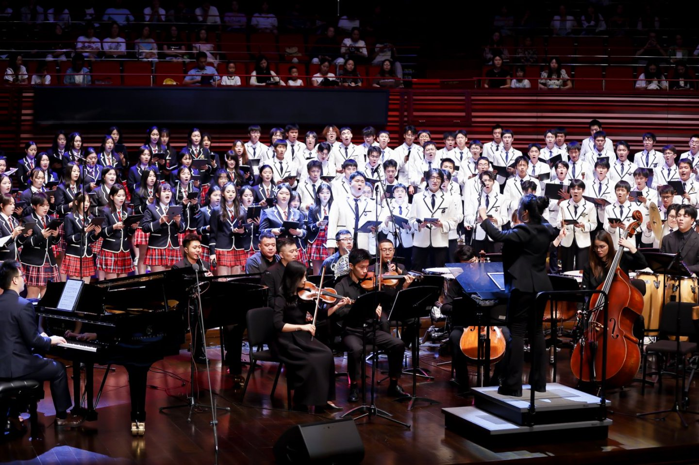
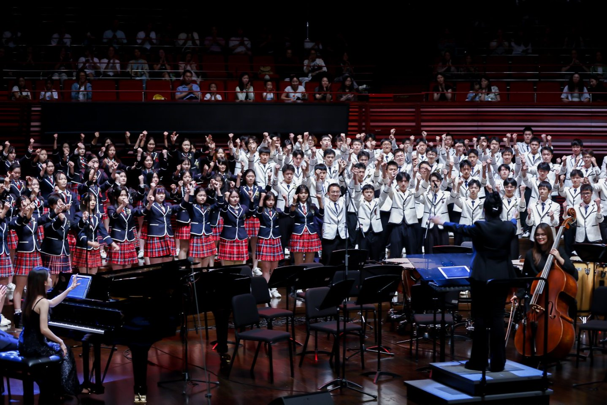

- 热爱音乐，对合唱艺术有浓厚兴趣
- 有团队合作精神，能积极参与集体活动
- 能坚持参加每周，每天的排练
- 可以坚持两年（高一，高二）的训练，不半途而废
- 最好是家长能够支持
- 对老师，他人持有尊重
- 需通过简单的音域测试
2025年度招新启事
金声合唱团诚邀热爱音乐、喜欢歌唱的你加入！
红岭中学金声合唱团成立于2007年，每届团员来自高一高二年级中热爱音乐、热爱歌唱的非特长生。建团至今，曾在各级各类合唱赛事中斩获殊荣，多次获得金奖。2014年被授予"深圳市模范合唱团"称号。金声合唱团已经在深圳音乐厅深圳大剧院等专业的音乐厅和剧院成功举办了22场大型专场合唱音乐会，成为全国颇具影响力的学生合唱团，被誉为"全国高中航母合唱团"。
距离线下正式面试截止还有
00
天
00
时
00
分
00
秒
无论你是经验丰富的合唱爱好者，还是对歌唱充满热情的新手，只要热爱音乐，我们都欢迎你的加入！
招新要求（非常重要！！！）

关于曲库

金声合唱团拥有丰富的曲库资源，涵盖古典、现代、民族及国际合唱作品。我们的曲库包含超过300首精心挑选的合唱作品，从文艺复兴时期的经典复调音乐到当代流行合唱改编曲目，满足不同演出场合和艺术表现需求。
每位团员都可以在专业指导下探索多样化的音乐风格，提升音乐素养和表现力。我们的曲库定期更新，确保团员能够接触到最新、最具艺术价值的合唱作品。
了解更多曲目详情丰富的活动
加入金声合唱团，你将有机会参与丰富多彩的音乐活动，提升演唱技巧的同时拓展音乐视野：
艺术演出
每年举办的大型校园艺术节上，合唱团将呈现精心排练的曲目，展示合唱团的艺术成果。加入表演团的同学还有机会登上深圳大剧院或是深圳音乐厅的舞台，展现自我
合唱比赛
参加市级、省级乃至全国性的合唱比赛，与各校合唱团切磋技艺，提升演唱水平。近年来我们已斩获多项金奖和最佳表演奖。
音乐交流
参加与其他合唱团，音乐组织的音乐交流，与优秀合唱团共同学习、交流。在专业指挥指导下，体验不同风格的合唱作品。
大师交流
邀请知名合唱指挥家和声乐教育家来校指导，提供专业训练和个性化指导，帮助团员突破演唱瓶颈，提升艺术表现力。

2025年深圳大剧院 - 文人情致IV音乐会

2025年深圳音乐厅 - 飞翔之梦音乐会

音乐交流活动 - 与国外知名合唱团One Voice交流

特别邀请连芳贝老师 - 音乐会声乐指导
合唱团主要老师

江楠老师（老大）
合唱团艺术总监 & 指挥
毕业于黑龙江省哈尔滨师范大学， 1997年获得黑龙江省声乐大赛美声组一等奖第一名。现任红岭教育集团高中部中学音乐高级教师、学校金声合唱团指挥、国家级高中音乐教材培训专家、广东省中小学名师工作室主持人。先后师从湖北省歌舞剧院指挥李冶老师、国家一级指挥王军教授学习指挥。2007年组建红岭中学金声合唱团，在多年不懈的努力下，所指导的合唱团已成为国内颇具影响力的高中学生合唱团，多次获得各级各类比赛大奖，2014年6月由江楠老师指导的红岭金声合唱团被深圳市教育局正式授予“深圳市模范合唱团”称号。江楠老师也多次荣获深圳市优秀指挥奖。2016年7月，在全国第五届“魅力校园”合唱节中获得最佳指挥奖，2019年9月获得深圳市第五届合唱节优秀指挥奖。09年至今，成功策划并指导金声合唱团在深圳音乐厅、深圳大剧院等举剧院举办了20场面向深圳市民的合唱专场音乐会。
蒋子豪老师
艺术指导 & 钢琴伴奏
深圳市红岭教育集团高中部金声合唱团艺术指导兼钢琴伴奏。硕士毕业于四川音乐学院钢琴教育专业。曾获得“肖邦纪念奖”香港国际公开赛中国四川赛区一等奖、“李斯特纪念奖”香港国际钢琴公开赛中国四川赛区选拔赛二等奖、“学会杯”第五届四川青少年钢琴大赛成都赛区高校自选组一等奖、2023 年“创艺五月”中小学艺术展演活动“优秀伴奏奖”。曾于2023年深圳市中小学艺术展演合唱节中多次担任钢琴伴奏，并获得一致好评。
我们的教师团队拥有丰富的教学经验和专业背景，致力于为每位团员提供最专业的声乐指导
入团方式
请于2025年9月1日-9月20日期间参加线下面试
- 时间：9月1日-20日（每天下午4:35-6:00）
- 地点：红岭中学艺体中心D2合唱团教室
- 流程：填写报名表 → 面试交流 → 简单清唱 → 音域测试 → 分声部，入团
- 准备：请准备一首自己喜欢的歌曲（清唱，1分钟以内）

常见问题

我零基础，声乐能力一般，可以加入金声吗？
当然可以！加入金声最重要的就是热爱和坚持的态度（这很重要），基础和技巧都会系统地教学。有什么问题都可以问学长学姐，学长学姐会尽自己最大努力帮助你。而且进入金声合唱团之后，会根据各位的实际情况，给每个学弟学妹分配指定的学长or学姐。学长学姐都会温柔耐心的教大家，他们会带领你们熟悉金声的一切，带领你们一起歌唱。
排练会影响学习吗？
如果要建设一个高水平合唱团，的确需要很多排练时间，所以老师创新性地设置了普团和表演团两个层次；普团就是全体合唱团员，参加校内活动，因而训练时间相对较少；表演团是由普团中对音乐对歌唱有更加浓厚兴趣，想参加更多活动，并且有坚定意志力的同学组成的，因而歌唱水平也会提升得较快。参加表演团确实更加辛苦，但它不仅能提高歌唱水平，还能极大培养你的学习效率、适应集体和合作应变的能力。除此之外，表演团同学将参与更高规格的各级各类比赛和展演，为未来在报考心仪大学的自主招生简历上，积累更丰厚的业绩成果素材。只要大家能够合理分配时间，合唱团不仅不会影响学习，反而能促进你学习，红岭每届高考考上重点名校的学生中有非常多我们表演团的同学哦！！
加入合唱团有哪些收获？
除了提升歌唱技巧和音乐素养外，你还能：
- 有机会参与校内外演出和比赛
- 结交志同道合的朋友
- 培养团队协作能力
- 丰富个人成长经历
- 有机会参与校内外演出和比赛
- 结交志同道合的朋友
- 培养团队协作能力
- 丰富个人成长经历
加入了金声还可以加社团嘛？
可以，金声不与任何社团部门冲突。金声属于校队校本，参加金声后不能再参加星辰舞蹈团，逐道啦啦操等校队。
入团要线下清唱，我是社恐害怕怎么办QAQ？
清唱考核的目的不是为了选拔唱的好的才能进入金声，而是对面试学生在唱法音准音域音色和表现力等方面有个整体情况的了解，这样他(她)未来进团后我们就知道应该放哪个声部，应该从哪些方面进行训练提高，所以没有任何音乐基础和声乐基础都没关系的，只要真心热爱唱歌能坚持参加愿意合作就可以了。
金声的排练时间在什么时候？
金声分为普团和表演团，普团每天早上有早训(早操时间)、校本课、每周下午大概两次排练(活动课时间)。表演团除了普团的排练之外，还有周四校本课下课后，周五中午的排练、周日(返校日)下午的排练以及寒暑假集训。（要准时来排练哦）
金声招钢琴伴奏吗？
Yes！我们招收学生钢琴伴奏，跟合唱团员面试时间是一样的。考核内容：①自己自备一首曲子，可以照着谱弹。②我们会现场给你一个比较简单的合唱钢琴伴奏现场视奏。另外需要说明的是：因为钢琴伴奏是在早训和排练出现特殊情况下帮忙伴奏的，所以必须先要参加合唱团成为一名合唱团员。
我高一时因为一些个人原因没能参加金声，开学我就高二了，很想参加，我还可以去面试吗？
可以的哦！每年招新时也会有一些高二的同学来面试加入合唱团，只要能保证坚持参加一年，金声也非常欢迎你啊！
平常会有什么活动之类的吗？
我们高一新生在九月末左右的时候会有迎新会，然后每年也都会办老大的生日会，到时候大家都可以积极参加哦！
平常会有什么活动之类的吗？
我们高一新生在九月末左右的时候会有迎新会，然后每年也都会办老大的生日会，到时候大家都可以积极参加哦！
参加金声合唱团会有义工时吗？
关于这个问题，金声的义工学时就按照具体参加的活动来计算，表演团的同学们参加的活动是比较多的，那么义工学时就比较多，比如说今年暑假音乐会的义工学时差不多就有60多个小时（高一高二的暑假都有音乐会）！而像社会实践和社区服务这类，在每年的寒假和暑假都会有给社会实践的学时，不过这是只有表演团才有，比如说寒暑假的集训。那普团的义工学时相较于来说会比表演团少一些，但是表演团的同学付出的时间要多，所以努力和回报是成正比的！[特别注意，我们不欢迎只为了义工时而来的同学！！！]